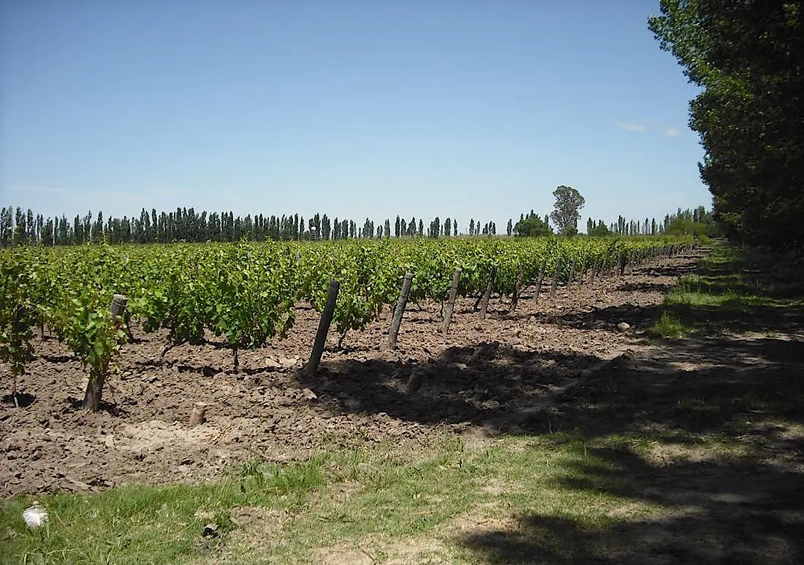
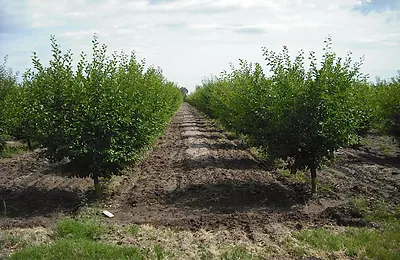
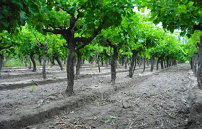
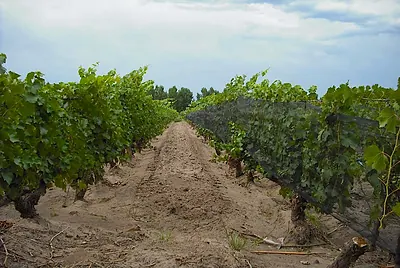
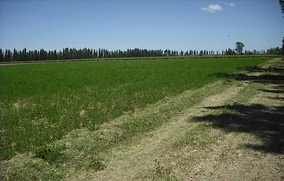

Colonia Gelman, San Rafael, Argentina
Well-Kept Vineyard with Great Production plus Plums on 64 Acres
Reduced by US$25,000!
Ce bien est déjà vendu. Il reste ici comme témoignage de ce qui s'est vendu et à quel prix. Demandez à Byron quelque chose de comparable.

La description complète de ce bien est encore en anglais. Nous les traduisons une par une. En attendant, demandez à Byron sur WhatsApp ou par e-mail — il vous racontera tout en français.
(Note: Originally listed at US$135,000, this farm has been reduced to a price of US$110,000)
The farm includes a brick worker's house which totals about 1,000 square feet with a zinc metal roof and has been used most recently by family members for vacation stays.
There are water rights attached to the deed for the full 26 hectares. That water is delivered to the finca via the canal network of irrigation water across the region which is produced by snow melt from the Andes and fed into a series of dams which control the water flow.

There are 22 acres of grapes and 5 acres of plums. 12 acres of land was leveled and put into alfalfa, but that may need to be replanted since alfalfa fields have a lifespan of about 5 before needing to be replanted. There are about 25 acres of fallow land previously in pasture that is leveled and also ready to plant.
5 Acres of Bonarda grapes (a Class B fine wine grape) under anti-hail netting, planted in espaldero-style producing an average annual yield of about 35,000 kilos.
5 Acres of Pinot Blanc (Chenin) grapes for white wine or champagne under netting, planted espaldero-style with an average annual yield of 30,000 kilos. (Note: Champagne grapes have enjoyed higher prices recently due to shortages of those varieties for various reasons.

7-Acre parral-style vineyard of mixed grapes (Muscatel, Pedro Ximenez, Cereza and Criolla) for common table wine, grape must, table grapes or raisins. This vineyard sector produces an annual average of 80,000 kilos of the above- named grape varietals.
5-Acre vineyard of mixed grapes in espaldero style (Muscatel and Pedro Ximenez) for white table wine or rose wine with an annual harvest averaging 40,000 kilos.
5 Acres of D'Agen plums for drying as prunes with an annual harvest of 40,000 kilos. These plums are not fully in production yet, and should achieve totals of 50,000 kilos annually in the coming years.

25 Acres of land formerly pasture, leveled and apt for agriculture typical in the region.
12 Acres formerly in alfalfa that should be reseeded or put into another crop.
"This property was acquired by our family in the 1970s in its entirety (26 hectares) as uncultivated virgin field. It was designed and planted by its owners, who cleared and leveled the ground and divided it into sectors to suit the cultivation of vines and fruit trees.

"The farm was originally planted 50% with fruit, such as peaches and pears, and 50% with vines. Over the years the owners worked to maintain quality and yields and devoted more of the acreage to growing grapes. Currently more than half of the cultivated area are represented by young plants in full stage of production.
"The farm is located in the province of Mendoza, San Rafael, district of Monte Coman, in Colonia Gelman, near National Route 146. This area is characterized by large temperature ranges, with warm days and cool nights, and offers an excellent climate for grapes with great concentration and determination of tannins, resulting in very good conditions for wine- making. The winters are cold with heavy frost, and sometimes snow precipitation is observed.
"Colonia Gelman is bordered by the two rivers known as the Rio Diamante and the Rio Atuel. The canal irrigation water for this farm is taken from the Rio Atuel."
Les autres photos
7 photos supplémentaires de ce bien. Touchez-en une pour l'agrandir.


{kind=link}
{kind=link}
{kind=link}
{kind=link}
{kind=link}
{kind=link}
{kind=link}
{kind=link}
{kind=link}
{kind=link}
{kind=link}